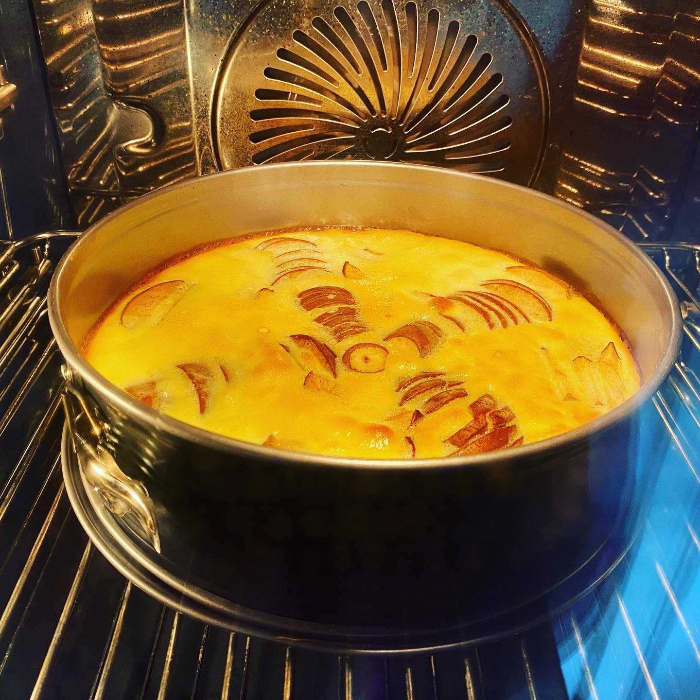

Hruškový koláč podľa @hanamojesmecka — Normy Jedál
Už dlouho jsem nepekla nic Low Carb, nebyl čas;) A deštivá sobota je ideální příležitost zase vyzkoušet nějaký recept;) Tak jsem moc zvědavá, co z toho vyleze 😃 Měl by to být hruškový koláč podle @cukrfree.cz #lowcarbbuchta #nizkosacharidovastrava #nizkosacharidovabuchta #hruskovykolac #nizkosacharidovykolac